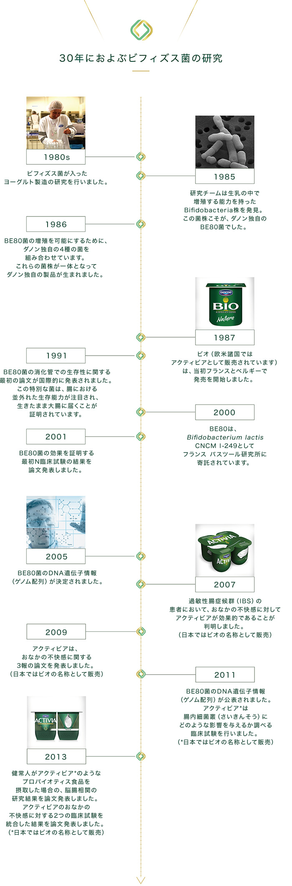

30年におよぶビフィズス菌の研究
現在、ダノンビオ（欧米諸国ではアクティビアとして販売されています）は5つの大陸で販売されており、世界売り上げNo.1 *のヨーグルトブランドとなっています。ではどのような変遷を経て、世界のご家庭でおなじみのブランドになったのでしょう？世界中で愛されているヨーグルトの歴史をご紹介します。

- 1980年代
- ビフィズス菌が入ったヨーグルト製造の研究を行いました。
- 1985年
- 研究チームは生乳の中で増殖する能力を持ったBifidobacteria株を発見。この菌株こそが、ダノン独自のBE80菌でした。
- 1986年
- BE80菌の増殖を可能にするために、ダノン独自の4種の菌を組み合わせています。これらの菌株が一体となってダノン独自の製品が生まれました。
- 1987年
- ビオ（欧米諸国ではアクティビアとして販売されています）は、当初フランスとベルギーで発売を開始しました。
- 1991年
- BE80菌の消化管での生存性に関する最初の論文が国際的に発表されました。
この特別な菌は、腸における並外れた生存能力が注目され、生きたまま大腸に届くことが証明されています。
- 2000年
- BE80は、Bifidobacterium lactis CNCM I-249としてフランス パスツール研究所に寄託されています。
- 2001年
- BE80菌の効果を証明する最初の臨床試験の結果を論文発表しました。
- 2002年
- アクティビア*摂取する最初の臨床試験の結果を論文発表しました。
（*日本ではビオの名称として販売)
- 2005年
- BE80菌のDNA遺伝子情報（ゲノム配列）が決定されました。
- 2007年
- 過敏性腸症候群(IBS)の患者において、おなかの不快感に対してアクティビア*が効果的であることが判明しました。（*日本ではビオの名称として販売)
- 2009年
- アクティビア*は、おなかの不快感に関する３報の論文を発表しました。（*日本ではビオの名称として販売)
- 2011年
- BE80菌のDNA遺伝子情報（ゲノム配列）が公表されました。アクティビア*は腸内細菌叢（さいきんそう）にどのような影響を与えるか調べる臨床試験を行いました。（*日本ではビオの名称として販売)
- 2013年
- 健常人がアクティビア*のようなプロバイオティス食品を摂取した場合の、脳腸相関の研究結果を論文発表しました。アクティビアのおなかの不快感に対する２つの臨床試験を統合した結果を論文発表しました。（*日本ではビオの名称として販売)